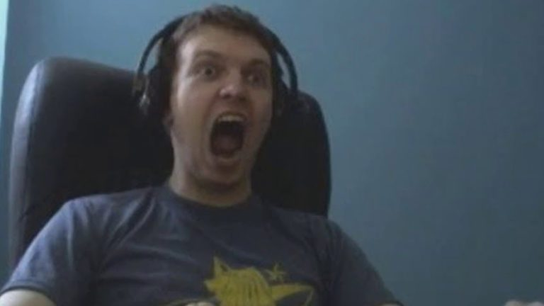

Глава научного отдела Института подготовки атлетов Абсолютного бойцовского чемпионата (UFC) Роман Фомин объяснил успех россиянина Хабиба Нурмагомедова. Интервью со специалистом опубликовал RT.
Ученый отказался называть 31-летнего действующего чемпиона UFC «генетически одаренным атлетом». Однако Фомин подчеркнул, что подобного успеха невозможно достичь, не имея определенной предрасположенности. «Видно, что Нурмагомедов очень много и давно работает. Его восхождение на вершину — результат системного процесса», — заявил он.
В ходе интервью Фомин отметил, что Институт подготовки атлетов UFC неоднократно посещают его соотечественники — тяжеловес Алексей Олейник, а также представитель легчайшего дивизиона Петр Ян. Специалист отметил, что рад видеть россиян и помогает им в общении с местным персоналом.
Нурмагомедов — действующий обладатель титула чемпиона UFC в легком весе и дважды защитил пояс. Россиянин сломил сопротивление бывшего чемпиона ирландца Конора Макгрегора в октябре 2018-го, а спустя год одолел временного чемпиона американца Дастина Порье. На счету российского бойца серия из 12 побед в рамках промоушена. Всего на счету Нурмагомедова 28 побед.

Жесткий тильт в дота 2
Встань мид! Ты конченый?! Встань и стой со мной, блять, Фишман. Ты хуяришь по 20 эмэмов в день. Нахуя? Для чего? Объяснишь мне? Ты ебаный крип, крипочек. Нет смысла играть в доту по 20 игр в день, если ты долбаёб. Нет смысла. Понимаешь? Пиздец, я в ахуе. Встань в миде и стой со мной, пусть тебя убивают, я не могу к вам подойти. Нахуй ты нужен снизу? Я в ахуе с таких челов. Чел сидит, блять, играет в доту, блять. Пол жизни своей, просто крип ебанейший. Да я в тильте ебаном. Он не умеет играть